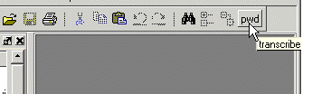

add button <text> {<cmd>[; ...]} [Disable | NoDisable] [{<option> <value> ...}]
(required) Specifies the label to appear on the face of the button. Must be the first argument.
(required) Specifies the command(s) to execute when the button is clicked. Separate multiple commands with a semicolon ( ; ). Must be the second argument.
Commands that contain any spaces or non-alphanumeric characters must be enclosed in braces ( {} ).
To echo the command and display the return value in the Transcript window, prefix the command with the transcribe command. The transcribe command also echos the results to the Transcript window.
(optional) Specifies the appearance of the button.
Disable — (default) The button is inactive and grayed-out during a run.
NoDisable — The button is active and available during a run.
(optional) Specifies Tk button option(s) to apply to the button. Must be preceded by Disable or NoDisable.
<option> — Any legal Tk button option.
<value> — Specifies the value for the Tk button option(s).
Enter multiple <option><value> Tk button options as a space separated list. You must enclose your option/value pairs in braces ( {} ).
To specify any option/value pairs, you must specify either Disable or NoDisable.
You can access the Tk documentation for button options from . Then select the links: Tk commands, then buttons.
You can use any properties belonging to Tk button widget. Useful options are foreground color (‑fg), background color (-bg), width (-width), and relief (-relief).
For a complete list of available options, use the configure command addressed to the newly created option. For example:
.dockbar.tbf0.standard.tb.button_51 configReturns the path name of the button widget created. You may want to remember this path name, which is similar to:
# .dockbar.tbf0.standard.tb.button_49in case you ever want to remove the button.
To remove a previously added button, you can use the destroy Tcl command with the button’s path name as an argument. For example:
destroy .dockbar.tbf0.standard.tb.button_49Arguments to this command are order-dependent. Please read the argument descriptions for more information.
Create a button labeled “pwd” that invokes the transcribe command with the pwd Tcl command, and echoes the command and its results to the Transcript window. The button remains active during a run.
add button pwd {transcribe pwd} NoDisable

Create a button labeled “date” that echoes the system date to the Transcript window. The button is disabled during a run; its colors are: blue foreground, yellow background, and red active background.
add button date {transcribe exec date} Disable \
{-fg blue -bg yellow ‑activebackground red}
Create a “doit” button and underline the second character of the label, the "o" of "doit".
add button doit {run 1000 ns; echo did it} Disable {-underline 1}
Change the command that the button executes to "run 10000" and the button’s background color to red. To do this, you need to know the button’s path name that was returned after the initial creation of the button.
.dockbar.tbf0.standard.tb.button_13 config -command {run 10000} -bg red